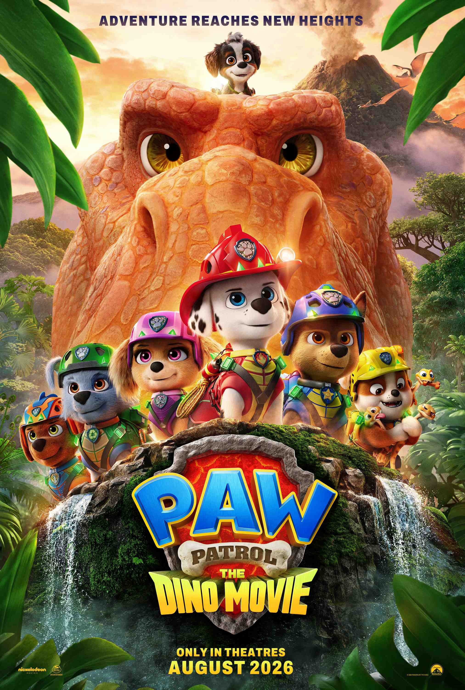

PAW Patrol: The Dino Movie
Director: Cal Brunker • Year: 2026 • Genre: Superhero / Action / Adventure / Comedy / Family • Runtime: 1h 28m
A Family Trip Back to the PAW Patrol
PAW Patrol: The Dino Movie takes the PAW Patrol on another big-screen adventure, this time throwing Ryder and the pups into a world filled with dinosaurs. Like the previous movies, this one puts one particular pup at the center of the story. The first movie focused on Chase, the second gave us Skye, and now it's Marshall's turn to step up and discover what he's really capable of.
We've watched all of the PAW Patrol movies since they started hitting the big screen, and honestly, they've all been fun. This one was no different. Me, Fox, and Lizzie went and watched it together, and all three of us enjoyed it. It's colorful, funny, visually impressive, and has enough adventure to keep the kids entertained while still being enjoyable for the adults sitting there with them.
This review is going to be a little different, though. You'll still get my take on the movie, but I'm keeping mine fairly brief because I'm letting my boy Fox give you his full review. I mean, what better perspective can you get on a PAW Patrol movie than from a kid who has grown up watching PAW Patrol? So, I'll give you the dad's perspective, and then I'm handing this one over to him.
Daniel's Take
Marshall Gets His Turn
One thing I've liked about these movies is that each one focuses on a different pup. The first movie gave us Chase's story, the second focused on Skye, and now we get Marshall. Yeah, it's becoming a little wash-and-repeat with the basic formula, but each pup has their own struggles, and I still like getting their individual stories.
Marshall has always been the clumsy, accident-prone member of the team. He's constantly tripping over something or messing something up, and in this movie you see how much that has affected the way he sees himself. He starts believing that maybe he's a burden to the team rather than somebody they can depend on.
Of course, when everything goes wrong, Marshall has to discover that he's more than he thinks he is. He has to step up and become the hero everybody else already believes he can be, especially Ryder. It's a simple message, but it's a good one for a kids' movie.
This Movie Looks Great
Visually, this movie looks great. The animation is clean, the colors are vibrant, and just seeing all the different dinosaurs brought into the PAW Patrol world was super cool.
Some of my favorite-looking moments come when things get darker and Marshall is preparing to face what he's afraid of and save everybody else. The lighting and animation during those scenes really stood out to me. He's being put into the position where he has to become the hero everybody expects him to be, and visually the movie does a great job selling those moments.
These movies continue to look better than they probably have any reason to. The animation is fantastic, the colors pop, and I'm interested to see what they do with these movies next.
A Surprisingly Stacked Cast
The voice cast is pretty stacked, too. You've got names like Terry Crews and Snoop Dogg alongside a recognizable group of talent. The voice acting throughout the movie is good, and it's kind of crazy when you stop and look at some of the people they've managed to get into a PAW Patrol movie.
Rex and Representation
Something else that really stood out to me was Rex, the pup who uses a wheelchair. I already liked seeing a disabled character included in a children's movie, but finding out that Hayden Chemberlen, the kid voicing Rex, actually uses a wheelchair himself made me appreciate it even more.
I'd like to see more of that kind of representation in children's movies. Not just characters with physical disabilities, but characters with autistic traits, Down syndrome, cerebral palsy, or other differences. Give those kids somebody cool that they can relate to and see as part of the adventure just like everybody else.
Maybe I'm looking at that differently because I'm an adult now. When I was a kid, I don't remember caring whether somebody on screen was like me or not. Maybe kids notice it more than I did. Maybe they don't care nearly as much as we adults think they do. Who knows? But I still think there's something good about a kid being able to look at a character like Rex and see somebody like themselves being part of the PAW Patrol universe.
My Final Take
All in all, it's another fun PAW Patrol movie. If you've got younger kids, older kids who still enjoy the series, or you're an adult who just wants something short, colorful, exciting, and fun to watch with them, it's worth seeing.
Me, Fox, and Lizzie had a good time with it, and that's ultimately what I want out of a movie like this. It's something we could all sit down and enjoy together.
But that's enough from me. This is a kids' movie, and I've got a kid sitting right here who has plenty to say about it.
So I'm handing this one over to Fox.
Fox's Take
The Best PAW Patrol Movie Yet
I think PAW Patrol: The Dino Movie was really good. Actually, I think this is the best and most interesting PAW Patrol movie yet.
One thing I noticed was that it didn't have the normal theme song that PAW Patrol usually has, which I thought was really interesting.
I also thought it was really cool how the movie brought in stuff from like 66 million years ago with all the dinosaurs. Seeing all the dinosaurs was super cool, and visually I thought the movie looked really good. The animation was really good, the colors were really good, and everything looked great.
Marshall and the Dinosaurs
Something that was super funny was when Marshall fell onto a dinosaur's nose and said, "I'm okay!" Then Skye was like, "Marshall, watch out!" Marshall looks back and sees these two HUGE eyes looking at him. That was hilarious.
I also thought Rex's huge treehouse was really cool, and the way they actually got onto the island was kind of crazy. Then Marshall gets a new dinosaur friend named Rhubarb, which I really liked.
Basically, this whole movie is about Marshall, and there's actually a pattern with these movies. The first movie was based on Chase. The second movie was based on Skye. And now the third movie is based on Marshall.
PAW Patrol Meets YouTube
At the beginning of the movie, there's also this kid who's trying to livestream while they're on a yacht in the middle of the ocean. The yacht catches on fire and the PAW Patrol has to come save everybody.
But the kid is still worried about his livestream and saying stuff like "make sure to like and subscribe." I thought that was super funny because they basically brought YouTube and streamers into PAW Patrol.
Fox's Final Rating
I really liked Marshall's story, the dinosaurs, Rhubarb, Rex, and the whole island. And visually, like I said, everything was really good.
I would recommend this movie for kids around 3 to 10 years old, but honestly, if you're a real PAW Patrol fan, you can watch it at basically any age.
I loved it.
Five stars. 10/10.
I think it's the best PAW Patrol movie yet.
— Fox
Audience Feedback
I’d love to hear your feedback and thoughts on the film. Email me at daniel@nobodycritics.com.